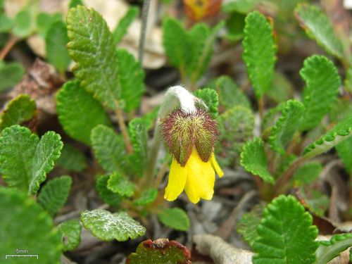

Pearl Crescent
Phyciodes tharos butterfly / moth
Widespread, aster specialist.
37 documented plant relationships.
sips nectar at
Arctic AsterEurybia sibiricaBastard ToadflaxComandra umbellataBlanketflowerGaillardia aristata Boreal YarrowAchillea borealis
Boreal YarrowAchillea borealis Douglas Goldman, some rights reserved (CC BY-SA), uploaded by Douglas Goldman") Canada GoldenrodSolidago canadensis
Canada GoldenrodSolidago canadensis aarongunnar, some rights reserved (CC BY), uploaded by aarongunnar") DewberryRubus pubescens
DewberryRubus pubescens Douglas Goldman, some rights reserved (CC BY-SA), uploaded by Douglas Goldman") Flat-topped GoldenrodEuthamia graminifolia
Flat-topped GoldenrodEuthamia graminifolia Michael J. Papay, some rights reserved (CC BY), uploaded by Michael J. Papay") Flat-topped White AsterDoellingeria umbellata
Flat-topped White AsterDoellingeria umbellata Thayne Tuason, some rights reserved (CC BY-SA)") Golden TickseedCoreopsis tinctoriaHeart-leaved ArnicaArnica cordifolia
Golden TickseedCoreopsis tinctoriaHeart-leaved ArnicaArnica cordifolia Tero Laakso, some rights reserved (CC BY-SA)") Jerusalem ArtichokeHelianthus tuberosus
Jerusalem ArtichokeHelianthus tuberosus Andreas Stiller, some rights reserved (CC BY), uploaded by Andreas Stiller") Late GoldenrodSolidago gigantea
Late GoldenrodSolidago gigantea Lindley's AsterSymphyotrichum ciliolatumMany-flowered Aster (Tufted White Prairie Aster)Symphyotrichum ericoides
Lindley's AsterSymphyotrichum ciliolatumMany-flowered Aster (Tufted White Prairie Aster)Symphyotrichum ericoides Sarah Johnson, some rights reserved (CC BY), uploaded by Sarah Johnson") MeadowsweetSpiraea alba
MeadowsweetSpiraea alba Tom Norton, some rights reserved (CC BY), uploaded by Tom Norton") Pearly EverlastingAnaphalis margaritacea
Pearly EverlastingAnaphalis margaritacea Philadelphia FleabaneErigeron philadelphicus
Philadelphia FleabaneErigeron philadelphicus Meghan Cassidy, some rights reserved (CC BY-SA), uploaded by Meghan Cassidy") Prairie ConeflowerRatibida columnifera
Prairie ConeflowerRatibida columnifera Douglas Goldman, some rights reserved (CC BY-SA), uploaded by Douglas Goldman") Purple-stemmed Tall Aster (Swamp Aster)Symphyotrichum puniceumShrubby CinquefoilDasiphora fruticosa
Purple-stemmed Tall Aster (Swamp Aster)Symphyotrichum puniceumShrubby CinquefoilDasiphora fruticosa David Anderson, some rights reserved (CC BY), uploaded by David Anderson") Silky LupineLupinus sericeus
Silky LupineLupinus sericeus Slender Cinquefoil (Graceful Cinquefoil)Potentilla gracilis
Slender Cinquefoil (Graceful Cinquefoil)Potentilla gracilis aarongunnar, some rights reserved (CC BY), uploaded by aarongunnar") Smooth AsterSymphyotrichum laeveSmooth Fleabane (Streamside Fleabane)Erigeron glabellusSneezeweedHelenium autumnale
Smooth AsterSymphyotrichum laeveSmooth Fleabane (Streamside Fleabane)Erigeron glabellusSneezeweedHelenium autumnale gwt2102, some rights reserved (CC BY)") Spreading DogbaneApocynum androsaemifolium
Spreading DogbaneApocynum androsaemifolium Matt Lavin, some rights reserved (CC BY-SA)") Three Flowered Avens (Prairie Smoke, Old Man's Whiskers)Geum triflorumWestern Wood LilyLilium philadelphicum
Three Flowered Avens (Prairie Smoke, Old Man's Whiskers)Geum triflorumWestern Wood LilyLilium philadelphicum tzeducation, some rights reserved (CC BY), uploaded by tzeducation") Wild BergamotMonarda fistulosaWild MintMentha canadensis
Wild BergamotMonarda fistulosaWild MintMentha canadensis Abby Hyde, some rights reserved (CC BY), uploaded by Abby Hyde") Wild StrawberryFragaria virginiana
Wild StrawberryFragaria virginiana Michael J. Papay, some rights reserved (CC BY), uploaded by Michael J. Papay") Willow AsterSymphyotrichum lanceolatumWoolly GroundselPackera cana
Willow AsterSymphyotrichum lanceolatumWoolly GroundselPackera cana
Boreal YarrowAchillea borealisCanada GoldenrodSolidago canadensisDewberryRubus pubescensFlat-topped GoldenrodEuthamia graminifoliaFlat-topped White AsterDoellingeria umbellataGolden TickseedCoreopsis tinctoriaHeart-leaved ArnicaArnica cordifoliaJerusalem ArtichokeHelianthus tuberosusLate GoldenrodSolidago giganteaLindley's AsterSymphyotrichum ciliolatumMany-flowered Aster (Tufted White Prairie Aster)Symphyotrichum ericoidesMeadowsweetSpiraea albaPearly EverlastingAnaphalis margaritaceaPhiladelphia FleabaneErigeron philadelphicusPrairie ConeflowerRatibida columniferaPurple-stemmed Tall Aster (Swamp Aster)Symphyotrichum puniceumShrubby CinquefoilDasiphora fruticosaSilky LupineLupinus sericeusSlender Cinquefoil (Graceful Cinquefoil)Potentilla gracilisSmooth AsterSymphyotrichum laeveSmooth Fleabane (Streamside Fleabane)Erigeron glabellusSneezeweedHelenium autumnaleSpreading DogbaneApocynum androsaemifoliumThree Flowered Avens (Prairie Smoke, Old Man's Whiskers)Geum triflorumWestern Wood LilyLilium philadelphicumWild BergamotMonarda fistulosaWild MintMentha canadensisWild StrawberryFragaria virginianaWillow AsterSymphyotrichum lanceolatumWoolly GroundselPackera cana
Yellow Mountain AvensDryas drummondii Tom Norton, some rights reserved (CC BY), uploaded by Tom Norton")